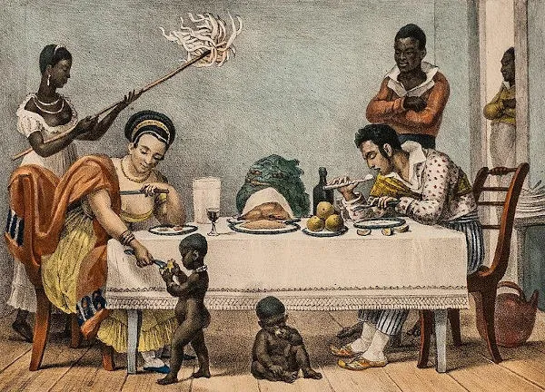

Brasil Colônia foi o período da história brasileira em que Portugal dominou e explorou o Brasil. Teve fim em 1822, quando ocorreu a independência do Brasil.
O Brasil Colônia correspondeu ao período em que Portugal colonizou a porção leste da América do Sul, que hoje corresponde à grande parte do território brasileiro. De 1500 até 1822, os portugueses colonizaram o Brasil, explorando suas riquezas para atender às demandas do mercado europeu. Apesar disso, a historiografia recente reconhece o período anterior à colonização efetiva dos portugueses como Pré-Colonial, equivalente ao período de 1500 a 1530 e à primeira fase da colonização no país.
- O período do Brasil Colônia se estendeu de 1500 a 1822, enquanto os
portugueses dominaram o
território brasileiro.
- A colonização do Brasil começou com a chegada dos portugueses, em 1500, e
a historiografia
recente considera o período anterior à colonização efetiva do território como Pré-Colonial,
de 1500 a 1530.
- Os portugueses instalaram o Governo-Geral na capital Salvador para
administrar a colônia e
fazer cumprir as ordens e leis vindas de Portugal, pois as capitanias hereditárias,
instaladas inicialmente para descentralizarem o poder, não deram certo.
- A economia colonial consistia na exploração de riquezas para atender aos
interesses do
mercado externo por meio da mão de obra escravizada.
- A partir de 1808, com a chegada da família real portuguesa ao Brasil,
deu-se início ao
processo de independência, rompendo-se os laços políticos entre colônia e metrópole.
Durante muito tempo, a historiografia iniciava os estudos sobre a história do Brasil
a
partir do dia 22 de abril de 1500, data da chegada da caravela de Pedro Alvares
Cabral ao
Brasil. Com a contribuição da antropologia e da arqueologia, os historiadores
ampliaram a
abordagem desses estudos para o período anterior à chegada dos portugueses.
Isso fez com que
a história dos povos indígenas, que já habitavam o território brasileiro antes do início
efetivo da colonização europeia, pudesse ser estudada e ensinada em sala de aula.
Outra contribuição dos estudos antropológicos e arqueológicos foi o conhecimento
sobre a
chegada dos primeiros habitantes à América. Assim, percebeu-se que a origem dos
nossos
ancestrais deu-se com os primeiros seres humanos que atravessaram o estreito de
Bering, na
fronteira entre a Rússia e o Alasca (EUA).
A arte rupestre, produção artística feita na Pré-História, permitiu-nos acessar informações
sobre os primeiros habitantes do continente americano e reconhecermos as pinturas
encontradas nas paredes das cavernas em solo brasileiro, como na Serra da Capivara (PI). Ao
se ampliar os estudos históricos, pôde-se conhecer com maior profundidade o modo de vida e a
organização social dos habitantes do Brasil antes da chegada dos portugueses, em
1500.
As tribos indígenas eram muitas e espalhadas por toda a América. Vale
destacar que cada uma
delas tinha suas diferenciações, fosse na língua, fosse no modo de se organizar, fosse no
local habitado. Por isso os modos de vida dos indígenas brasileiros se diferem entre si e de
outros indígenas encontrados na América Espanhola, como os incas, maias e
astecas. No
Brasil, os indígenas se organizaram de forma simples, trabalhando a terra, cultuando os
deuses da natureza, e, em muitos casos, entrando em confronto com tribos inimigas.
Em 1500, quando chegaram ao Brasil, o primeiro contato dos portugueses com os
indígenas foi
feito de forma cordial. Porém, ao exigirem o trabalho escravizado na exploração
das riquezas
daquela terra, iniciaram-se os confrontos que exterminaram milhares de indígenas e fizeram
desaparecer várias tribos. Como se não bastasse o extermínio, os indígenas sobreviventes
foram colonizados e tiveram de adequar seu modo de vida ao dos colonizadores portugueses.
Assim, a cordialidade inicial não durou muito.
A colonização do Brasil foi iniciada com a chegada dos portugueses, em 22 de abril de 1500,
e o período pré-colonial do Brasil corresponde à primeira fase do processo de
colonização. A
esquadra liderada por Pedro Alvares Cabral tinha como destino original as Índias, para
estreitar os laços comerciais que os portugueses haviam estabelecido com os orientais.
Assim, Pedro Alvares Cabral desembarcou no Brasil, mas o seu primeiro destino eram
as
Índias.
Algumas correntes historiográficas questionam o destino de Cabral em 1500. Alguns
historiadores afirmam que o seu destino era, de fato, a América, pois Portugal reconheceu a
existência de novas terras a oeste logo após a chegada de Cristovão Colombo, em
1492.
A missão cabralina era assegurar o domínio português sobre as terras a serem descobertas.
Essa afirmação encontra justificativa nas discussões entre portugueses e espanhóis na
elaboração do Tratado de Tordesilhas.
A princípio, a demarcação feita foi questionada por Portugal, que desejava uma fronteira
mais a oeste. Deduz-se que esse pedido seja um reconhecimento da Coroa portuguesa de que
Colombo não havia chegado a uma simples ilha, mas sim a um continente mais extenso, e que
era do interesse de Portugal colonizar as regiões que ainda não tinham sido dominadas pela
Espanha.
Logo após o desembarque, os portugueses encontraram no pau-brasil a primeira
atividade
econômica da colônia recém-conquistada, pois era uma árvore abundante no
litoral brasileiro.
A madeira e a seiva da árvore foram usadas pelos europeus na confecção de móveis e no
tingimento dos tecidos.
Não era um produto valioso no mercado externo, mas era a primeira oportunidade encontrada
para dar início à colonização brasileira. Os indígenas extraíam a árvore e a colocavam nas
embarcações portuguesas em troca de produtos sem valor comercial, como espelhos e outros
apetrechos.
Com a crise do comércio das especiarias, em meados do século XVI, os portugueses decidiram
investir na ocupação e exploração do Brasil. As tentativas de invasão vindas da França e da
Inglaterra também fizeram com que Portugal ocupasse em definitivo o território brasileiro.
Por três séculos, os portugueses dominaram o Brasil, explorando suas riquezas, como a
cana-de-açúcar e o ouro, cobrando impostos e abafando revoltas coloniais, até 7 de setembro
de 1822, data da proclamação da independência brasileira.
Os portugueses adotaram no Brasil a mesma forma de administração utilizada nas
colônias da
ilha da Madeira, no litoral africano. O território foi dividido em porções de
terra para
serem distribuídas entre nobres aliados da Coroa portuguesa. Eram as capitanias
hereditárias.
A ideia era descentralizar a administração colonial. Os donatários, como
foram chamados os
que geririam as capitanias, tinham como função garantir a segurança, verificar se a região
era próspera para a exploração e garantir o pleno cumprimento das ordens reais. O
desinteresse dos donatários em investir no Brasil fez com que as capitanias hereditárias não
dessem certo. Apenas as capitanias de Pernambuco e São Vicente prosperaram.
Como a descentralização do poder não conseguiu administrar de forma eficiente o Brasil
Colônia, a Coroa portuguesa decidiu centralizar o governo a partir da província da
Bahia.
Iniciava-se o Governo-Geral, com a colônia sendo governada pelo governador-geral, uma pessoa
de confiança do rei de Portugal para exercer o domínio metropolitano. O primeiro governador
foi Tomé de Souza, e uma de suas ações à frente do governo foi a construção da cidade de
Salvador, que se tornou a primeira capital brasileira.
O Governo-Geral investiu na construção de engenhos de cana-de-açúcar,
atividade econômica
que prosperou nos primeiros tempos coloniais. Ao longo do litoral nordestino, espalharam-se
inúmeras plantações de cana-de-açúcar, cujo principal objetivo era abastecer o mercado
europeu.
Portugal fez um acordo com a Holanda: os portugueses enviariam a cana-de-açúcar para a
Europa, e os holandeses ficariam responsáveis pelo refino e a comercialização do produto.
Estabeleceu-se, dessa forma, o Pacto Colonial, no qual Portugal teria o
monopólio do
comércio brasileiro, fazendo que a economia colonial girasse em torno dos interesses
metropolitanos.
Com os governadores-gerais, chegaram ao Brasil os primeiros padres
jesuítas. Esses
religiosos vieram em missão para evangelizar os indígenas. Não demorou para que os padres
entrassem em conflito com os portugueses por conta do uso do trabalho
indígena.
Enquanto os colonos queriam escravizar os indígenas para o trabalho na lavoura de açúcar, os
jesuítas defendiam sua ação missionária. Esse conflito foi apaziguado com os religiosos
conduzindo os indígenas para regiões distantes do litoral e mantendo o trabalho de
evangelização. Nas missões jesuíticas, os indígenas trabalhavam na terra e dela se
sustentavam.
Com o fracasso na escravidão indígena e a necessidade urgente de mão de obra para trabalhar
no plantio e colheita da cana-de-açúcar, os portugueses encontraram nos negros africanos a
força trabalhadora.
A partir do século XVI até 1888, o Brasil se sustentou tendo como base a mão de obra
escravizada negra, primeiramente nos engenhos de açúcar no Nordeste, e depois
na mineração
no centro-sul colonial. Os negros africanos foram escravizados e o tráfico negreiro se
tornou uma das atividades mais rentáveis do Brasil Colônia.
O Governo-Geral ficou responsável pela defesa da colônia, para isso,
instalou em pontos
estratégicos inúmeras fortificações militares para garantir a posse portuguesa das terras
povoadas e expulsar as tribos indígenas mais avessas ao contato com o colonizador. A ameaça
dos franceses invadirem a Baía da Guanabara fez com que o governador-geral Estácio de Sá
construísse a cidade do Rio de Janeiro, que, em meados do século XVIII, tornou-se capital da
colônia.
Enquanto o Brasil esteve sob o domínio de Portugal, a economia foi de
exportação, para
atender aos interesses do mercado externo. A primeira atividade econômica foi a
extração do
pau-brasil. Como os portugueses não encontraram nenhum metal precioso no
primeiro contato
com a terra recém-encontrada, o comércio daquela árvore da Mata Atlântica possibilitou aos
colonizadores um ganho na exploração do Brasil Colônia. A Coroa portuguesa acreditava que
encontraria metais preciosos com a mesma facilidade com que os espanhóis encontraram na
América Central.
Percebendo que a terra colonial era fértil e o clima favorável, os portugueses deram início,
no século XVI, à plantação de cana-de-açúcar. Engenhos foram construídos no litoral
nordestino para a produção açucareira. Com o fracasso na escravização da
mão de obra
indígena, a solução veio dos negros africanos. À medida que se produzia açúcar, maior era o
número de escravizados negros em solo brasileiro. O tráfico negreiro se tornou uma
atividade
econômica altamente lucrativa.
A crise do açúcar ocorreu em meados do século XVII, quando os holandeses foram expulsos de
Pernambuco. Os invasores começaram a plantar cana-de-açúcar nas Antilhas, sua colônia na
América Central, e logo se tornaram concorrentes do açúcar brasileiro. Isso fez com que o
preço da produção açucareira feita no Brasil se desvalorizasse. A Coroa portuguesa decidiu
então investir em expedições para o interior brasileiro, no intuito de descobrir metais
preciosos e fazer a colônia voltar a dar lucro.
No século XVIII, bandeirantes que saíram de São Paulo para o sertão do Brasil
encontraram na
região de Minas Gerais as primeiras minas de ouro. Logo que a notícia se
espalhou, milhares
de pessoas se deslocaram para as regiões, dando origem às primeiras cidades no interior
brasileiro, como Ouro Preto, Mariana e Cidade de Goiás.
Tal qual na produção açucareira, os metais preciosos foram levados para Portugal. Em torno
das minas de ouro, formou-se um comércio que atendia às demandas dos exploradores. A mão de
obra usada nas minas era a negra escravizada. Para aumentar o controle sobre a produção do
ouro, a Coroa portuguesa decidiu transferir a capital do Brasil de Salvador para o Rio de
Janeiro.
O fim do Brasil Colônia esteve atrelado à crise do Antigo Regime na Europa. A Revolução
Francesa e a Era Napoleônica alteraram a dinâmica política europeia, enfraquecendo diversas
monarquias absolutistas.
Ao não atender ao pedido francês de romper os laços econômicos com a Inglaterra, Portugal
teve seu território invadido por tropas napoleônicas. Isso motivou a fuga da família real
portuguesa para o Brasil, no ano de 1808. Essa transferência fez com que o centro do poder
saísse da metrópole e se instalasse na colônia.
Enquanto Portugal enfrentava a invasão da França, o Brasil pôde ampliar sua autonomia com as
medidas tomadas pelo rei português d. João VI, como a abertura dos portos às nações amigas e
a elevação a Reino Unido de Portugal, Brasil e Algarves. A luta pela independência
brasileira se tornou ordem do dia e de muito interesse para a elite colonial, que
considerava o domínio português como um entrave para o seu desenvolvimento econômico.
Com o retorno de d. João VI para Portugal logo após a Revolução do Porto, o príncipe regente
d. Pedro I permaneceu no Brasil e descumpriu todas as ordens portuguesas. O apoio da elite
fê-lo liderar e declarar a independência do Brasil, que ocorreu em 7 de setembro de 1822, em
São Paulo.